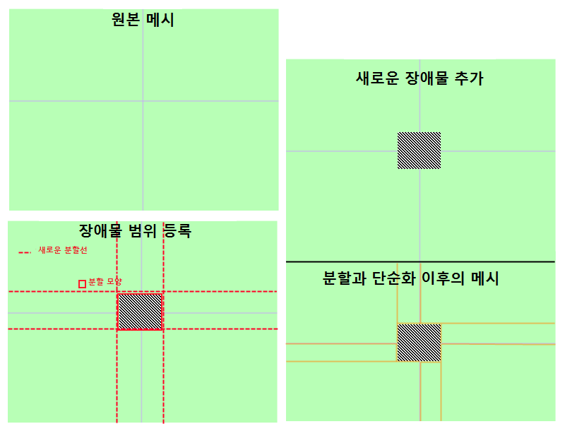
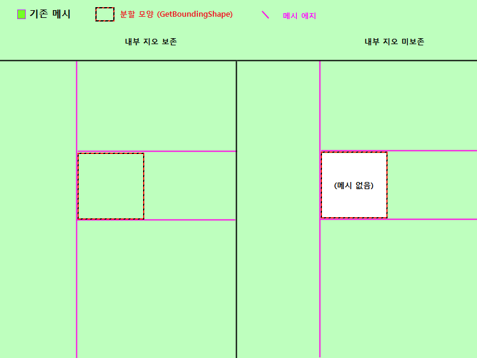

UDN
Search public documentation:
NavMeshDynamicObstacleSplittingKR
English Translation
?¥æœ¬èª�訳
ä¸?›½ç¿»è¯‘
Interested in the Unreal Engine?
Visit the Unreal Technology site.
Looking for jobs and company info?
Check out the Epic games site.
Questions about support via UDN?
Contact the UDN Staff
?¥æœ¬èª�訳
ä¸?›½ç¿»è¯‘
Interested in the Unreal Engine?
Visit the Unreal Technology site.
Looking for jobs and company info?
Check out the Epic games site.
Questions about support via UDN?
Contact the UDN Staff
UE3 ??/a> > AI?€ ?´ë¹„게ì�´??/a> > ?´ë¹„게ì�´??메시 ?™ì � ?¥ì• ë¬?ë¶„í• ê¸°ìˆ ??개요
?´ë¹„게ì�´??메시 ?™ì � ?¥ì• ë¬?ë¶„í• ê¸°ìˆ ??개요
문서 변경내?? Matt Tonks ?‘성. James Tan ?˜ì •. ?�성ì§?/a> 번ì—.
개요
?™ì �?¼ë¡œ 변경ë�˜???�황???°ë�¼ ?¤í–‰?œê°„???´ë¹„게ì�´??메시(?€ AI ?´ë¹„게ì�´???�태)???�í–¥???¼ì¹ ???ˆì—ˆ?¼ë©´ ?˜ëŠ” ?�황??종종 ?ˆìŠµ?ˆë‹¤. ?¬ê¸°?œëŠ” ?´ë¹„게ì�´??메시 ?œìŠ¤?œìœ¼ë¡?ê·??‘ì—…???´ë–»ê²??´ë£¨?´ì????Œì•„ë³´ê² ?µë‹ˆ??
?˜ì�´ ?ˆë²¨ 개요
기본 ê°œë…�?€ Interface_NavMeshPathObstacle (?¸í„°?˜ì�´???´ë¹„ 메시 ?¨ì“° ?¥ì• ë¬??€ ?´ë¹„게ì�´??메시ë¥??´ë–¤ 모양?¼ë¡œ ë¶„í• ? ì?ë¥??˜í??´ëŠ” ?¸í„°?˜ì�´?¤ë? ?¬ìš©?�ì—�ê²??œê³µ?©ë‹ˆ?? AI ê°€ ?Œì•„?¤ë‹� ??주ì�˜ë¥??´ì•¼ ?˜ëŠ” ?¥ì• 물ì�´ 게ì�„ ?”ë“œ???ˆë¡œ ?¤ì–´???Œë§ˆ?? ?¬ìš©?�는 RegisterObstacleWithNavMesh() (?¥ì• 물ì�„ ?´ë¹„ 메시ë¡??±ë¡� ?¨ìˆ˜)ë¥??¸ì¶œ?˜ê³ , 그러ë©?기존 메시???´ë¦¬ê³?ì¤??´ëŠ� 것ì�´ ???¥ì• 물ì—� ?�í–¥??받는지 ?�단?˜ì—¬, ?„ìš”?˜ë‹¤ë©??œê³µ??모양?¼ë¡œ 메시ë¥?ë¶„í• ?©ë‹ˆ??

???´ë?지?�ì„œ???´ë¦¬ê³??·ìœ¼ë¡?구성??기본 메시가 ?�브 모양?????¥ì• ë¬?모양 주ë??¼ë¡œ ?˜ë‰©?ˆë‹¤. ?¥ì• ë¬?모양?€ ?´ë³´??ë³µì�¡?´ë�„ ?˜ë©°, 축ì�„ ë§�추지 ?Šì•„???©ë‹ˆ?? ?¨ì? ë³¼ë¡�??모양?´ê¸°ë§??˜ë©´ ?©ë‹ˆ??계층구조
메시가 ?¥ì• ë¬?주ë??¼ë¡œ ?˜ë‰ ???¤ì œë¡?벌어지???‘ì—…?€, 기존 ?´ë¦¬ê³??�리???ˆë¡œ??메시ë¥?만드??것ì�…?ˆë‹¤. ?´ëŸ° ?�으ë¡?AI ê°€ ?�향받ì? ?´ë¦¬ê³¤ì�„ ?¬ìš©???Œë§ˆ??찾아보는 ?¼ì¢…??계층구조ë¥??•ì„±?©ë‹ˆ?? 중간 (?�는 ?¬ì¹) 메시ë¥?갖는 ?´ë¦¬ê³¤ì�„ ?µí•´ 길찾기ë? ???ŒëŠ”, 그냥 ê·??´ë¦¬ê³¤ì�˜ ?�ì??�ì„œ 길찾기ë? ?˜ê¸° 보단, ?´ë‹¹ ?œë¸Œë©”ì‹œë¥?찾아보게 ?©ë‹ˆ???”ì²??빌드
AI ê°€ ?¥ì• 물ì—� ?�향받ì? 것으ë¡??œê¹…???´ë¦¬ê³¤ì�„ ?µí•´ 길찾ê¸??”ì²?????? ?´ë‹¹ ?¥ì• ë¬?주ë??¼ë¡œ ?´ë¦¬ê³¤ì�´ ë¶„í• ?˜ì? ?Šì? ?�태?¼ë©´ 바로 ê·???ë¶„í• ?œí‚µ?ˆë‹¤. ì¦??¥ì• 물ì�„ ?±ë¡�?˜ì��마ì�� ë¶„í• ?˜ëŠ” 것ì�´ ?„ë‹Œ?? ê·??´ìœ ???¥ì• ë¬??±ë¡� 비용???´ë–»ê²Œë“ ê²½ê°�?œí‚¤ê¸??„함?…니?? ?ˆë? ?¤ì–´ ?±ë¡�ê³??´ì œê°€ 매우 ?�주 ?¼ì–´?˜ëŠ” ?¥ì• 물ì�´ ?ˆëŠ” 경우?¼ë©´, ?´ëŸ° 비싼 ?¥ì• ë¬?처리??AI ê°€ ?¤ì œë¡??�향받ì? 메시 ?°ì�´?°ì—� ?ˆì�„ ?Œë§Œ ??주면 ??것ì�…?ˆë‹¤. 추ê??�으ë¡??´ë¦¬ê³¤ì�´ ë¶„í• ?˜ê³ ?˜ë©´, ?´ë‹¹ 지?¤ë©”?¸ë¦¬ë¥??µí•˜??길찾기ì—� ê´€?¨ë�œ 추ê? 비용?€ ë°œìƒ�?˜ì? ?ŠìŠµ?ˆë‹¤. ì¦??¥ì• ë¬??±ë¡�???ˆì–´ 계산 비용?€ ????번만 ?¼ì–´?œë‹¤???»ì�…?ˆë‹¤. ?�í•œ 메시??부ëª?구조가 ë°”ë€Œê³ ?ˆì????Šìœ¼ë¯€ë¡? ?¥ì• 물ì�´ ?œê±°?�ì�„ ???�ë�˜ ?�태ë¡??Œë¦¬??비용?€ ê±°ì�˜ 공짜?…니??구현 ?¸ë??¬í•
?¨ì“° ?¥ì• 물ì�˜ 매우 간단???ˆì œë¡?NavMeshObstacle ë¥?ë´…ì‹œ?? ?¬ê¸°??ë³´ë©´ ?¥ì• 물ì�„ ì¼œê³ /?„는 ?¤ì¦ˆë©?ë¡œì§�??ëª?가지 ë³????ˆìŠµ?ˆë‹¤ë§? ?¬ë°Œ??부분ì? ?¬ê¹�?ˆë‹¤:
cpptext
{
/**
* ???¨ìˆ˜??out_polyshape ë¥????¤ë¸Œ?�트??ë³¼ë¡� 경계 모양???˜í??´ëŠ”
* 버í…�??리스?¸ë¡œ 채ì›�?ˆë‹¤.
* @param out_PolyShape - ???¥ì• 물ì�˜ 경계 ?´ë¦¬ëª¨ì–‘???€??버í…�??버í�¼ë¥??´ëŠ” ì¶œë ¥ ë°°ì—´?…니??
* @return ì°¸ì�´ë©????¤ë¸Œ?�트??바로 ?¥ì• ë¬???• ???©ë‹ˆ?? (거짓?´ë©´ ???¥ì• 물ì? 메시???�í–¥???¼ì¹˜ì§€ ?ŠìŠµ?ˆë‹¤.)
*/
virtual UBOOL GetBoundingShape(TArray<FVector>& out_PolyShape);
virtual UBOOL PreserveInternalPolys() { return TRUE; }
}
?„ì§� 메시?€ ?±ë¡�?˜ì? ?Šì? ?”ë“œ???¥ì• 물ì�…?ˆë‹¤. 메시???ˆì—� ?¥ì• 물ì�´ ?“ì—¬ ?ˆëŠ” 커다?€ ?´ë¦¬ê³??˜ë‚˜ë¡?구성?˜ì–´ ?ˆìŠµ?ˆë‹¤.
 (?¤í–‰?œê°„?? ?¥ì• 물ì�´ ?±ë¡�?˜ê³ 메시가 ë¶„í• ???´í›„??메시?…니??
(?¤í–‰?œê°„?? ?¥ì• 물ì�´ ?±ë¡�?˜ê³ 메시가 ë¶„í• ???´í›„??메시?…니??  ???ˆì œ ?¤ë¸Œ?�트가 ?•ì�˜???¨ìˆ˜ë¥??????´í�´ ë´…ì‹œ??
???ˆì œ ?¤ë¸Œ?�트가 ?•ì�˜???¨ìˆ˜ë¥??????´í�´ ë´…ì‹œ??
GetBoundingShape()
바운??모양 구하ê¸??¨ìˆ˜, ???¤ë¸Œ?�트??구현?€ ?´ë ‡?µë‹ˆ??
UBOOL ANavMeshObstacle::GetBoundingShape(TArray<FVector>& out_PolyShape)
{
out_PolyShape.AddItem(Location + FRotationMatrix(Rotation).TransformFVector(FVector(200.f,200.f,0.f)));
out_PolyShape.AddItem(Location + FRotationMatrix(Rotation).TransformFVector(FVector(-200.f,200.f,0.f)));
out_PolyShape.AddItem(Location + FRotationMatrix(Rotation).TransformFVector(FVector(-200.f,-200.f,0.f)));
out_PolyShape.AddItem(Location + FRotationMatrix(Rotation).TransformFVector(FVector(200.f,-200.f,0.f)));
return TRUE;
}
PreserveInternalPolys()
?´ë? ?´ë¦¬ê³?ë³´ì¡´ ?¨ìˆ˜, ???¨ìˆ˜ê°€ ?˜ëŠ” ?¼ì�´?¼ê³¤, ë¶„í• ?„ë¡œ?¸ìŠ¤?”러 ?¥ì• ë¬??ˆì—� ?ˆëŠ” 지?¤ë©”?¸ë¦¬ë¥?ê·??�리??? ì??œí‚¬ì§€ ?¼ëŸ¬ì£¼ëŠ” 것ì�´ ?„ë??…니?? ?„ì�˜ ?¤í�¬ë¦??·ì—�??ë³´ë©´, ?¥ì• ë¬??ˆì—� 지?¤ë©”?¸ë¦¬ê°€ ? ì??˜ê³ , ?˜ë¨¸ì§€ 메시?€ ?°ê²°??것ì�„ ë³????ˆìŠµ?ˆë‹¤.
?¨ì“° ?¥ì• 물ì—� ?ˆì–´ 마ì?ë§??œê?지 중요??부분ì?, ?¥ì• ë¬??´ë????´ë¦¬ê³¤ê³¼ (?´ë? 지?¤ë©”?¸ë¦¬ë§?ë³´ì¡´?˜ëŠ” ?¥ì• 물ì�˜) ?¸ë? ?¬ì�´??추ê????�ì? 종류ë¥?지?œí•˜??기능?…니?? ?¥ì• ë¬??´ë????´ë¦¬ê³¤ì—�???¸ë????´ë¦¬ê³¤ìœ¼ë¡?ë§�í�¬(?�ì?)ê°€ 만들?????Œë§ˆ?? ê·??¥ì• 물ì�˜ AddObstacleEdge() (?¥ì• ë¬??�ì? 추ê? ?¨ìˆ˜)ë¥??¸ì¶œ?˜ì—¬ ê·??‘ì—…???©ë‹ˆ?? ?´ë ‡ê²??˜ë©´ ?¬ìš©?�ê? ?‰ìœ„ë¥???–´?°ê³ , ?¥ì• 물ì—� ?�í•©???�ì? 종류ë¥?무엇?´ë“ 추ê??????ˆìŠµ?ˆë‹¤. 기본 ?‰ìœ„???¨ì? ëª¨ë“ AI ê°€ ?¨ì“° ?¥ì• 물ì�˜ ?´ì™¸ë¶€ë¥??¤ê°ˆ ???ˆë‹¤ ?¼ëŸ¬ì£¼ëŠ” 보통 ?�ì?ë¥?추ê??˜ëŠ” 것ì�…?ˆë‹¤. 그러???¨ì“° ?¥ì• 물ì�„ ?¤ì–´ê°€ê±°ë‚˜ ?˜ê°ˆ ???…특???‰ìœ„ë¥??˜ë�„ë¡??˜ë ¤??경우?? Inteface_NavMeshPathObject ??구현?˜ëŠ” 것ì�´ 좋ì�„ ???ˆìŠµ?ˆë‹¤.
?´ë ‡ê²??˜ë©´ ?¬ìš©?�ê? ?‰ìœ„ë¥???–´?°ê³ , ?¥ì• 물ì—� ?�í•©???�ì? 종류ë¥?무엇?´ë“ 추ê??????ˆìŠµ?ˆë‹¤. 기본 ?‰ìœ„???¨ì? ëª¨ë“ AI ê°€ ?¨ì“° ?¥ì• 물ì�˜ ?´ì™¸ë¶€ë¥??¤ê°ˆ ???ˆë‹¤ ?¼ëŸ¬ì£¼ëŠ” 보통 ?�ì?ë¥?추ê??˜ëŠ” 것ì�…?ˆë‹¤. 그러???¨ì“° ?¥ì• 물ì�„ ?¤ì–´ê°€ê±°ë‚˜ ?˜ê°ˆ ???…특???‰ìœ„ë¥??˜ë�„ë¡??˜ë ¤??경우?? Inteface_NavMeshPathObject ??구현?˜ëŠ” 것ì�´ 좋ì�„ ???ˆìŠµ?ˆë‹¤.
Interface_NavMeshPathObject ?€ ?¨ê»˜ ?¬ìš©
?”í�ˆ AddObstacleEdge() ë¥???–´?°ê²Œ ?˜ëŠ” 경우?? Path ?¤ë¸Œ?�트 ??ë§�í�¬?˜ëŠ” ?�ì?ë¥?추ê????Œì�…?ˆë‹¤. ?ˆë? ?¤ë©´ Interface_NavMeshPathObstacle ?€ Interface_NavMeshPathObject ????구현?˜ëŠ” ?¥ì• 물ì�„ 만들 ???ˆìŠµ?ˆë‹¤. ?´ê²Œ ??? ìš©?œì?ë¥?ê·¸ë ¤ë³´ë ¤ë©? ?ˆë²¨???œì�‘???´í›„ ?¼ë§ˆ ?ˆë‹¤ê°€ 바닥??ë¿Œë ¤ì§?기름 ?…ë�©?´ë? ?�ê°�??ë³´ë©´ ?©ë‹ˆ?? 기름 ?…ë�©?´ì—� ?€???„ìš”???‘ì—…?€:
- AI ê°€ ?…ë�©?´ë? ?Œì•„ê°€?„ë¡� ?˜ê¸° ?„í•´, ?…ë�©??모양 주위ë¡??¤íƒœ???´ë¹„게ì�´??메시ë¥?ë¶„í• ?œì¼œ???©ë‹ˆ??
- AI ê°€ ?…ë�©?´ë? ?¼í• ???ˆë‹¤ë©?그러?„ë¡� ?˜ê¸° ?„í•´, ?…ë�©?´ì—� ?¤ì–´ê°??Œì�˜ 비용??추ê??œí‚¤??방법??강구?´ì•¼ ?©ë‹ˆ??
- Interface_NavMeshPathObstacle::GetBoundingShape() 구현
- ?�ì ˆ???œê°„???¥ì• ë¬??±ë¡�
- AddObstacleEdge() ë¥???–´?¨ì„œ 보통???�ì? ?€??기름 ?…ë�©?´ì—� ?°ê²°??PathObject ?�ì?ë¥?추ê?
- Interface_NavMeshPathObject::CostFor() 구현 (Nav Mesh Path Objects KR ì°¸ê³ )
AddObstacleEdge()
지금까지 ?�세???¤ë£¨ì§€ ?Šì? 것ì? AddObstacleEdge(), ?¥ì• ë¬??�ì? 추ê? ?¨ìˆ˜ ë¿�ì�´?? ???¨ìˆ˜ë¥??�세???¤ì—¬??ë´…ì‹œ??
/** * ???¨ìˆ˜?????¥ì• ë¬??´ë? ?´ë¦¬ê³¤ê³¼ ?¸ë? ?´ë¦¬ê³¤ì�„ ?‡ëŠ” ?�ì?ê°€ 추ê??????¸ì¶œ?©ë‹ˆ?? * 기본 ?‰ìœ„??그냥 보통 ?�ì? 추ê??´ê³ , (?¨ì“° ?¤ë¸Œ?�트ë¥??¥ì• 물ì—� ?°ê²°?œë‹¤? ê?) ?¹ë³„??비용?´ë‚˜ ?‰ìœ„ë¥?추ê??˜ë ¤ë©???–´?�니?? * @param Status - ?„ì�¬ ?�ì????�태 (, 추ê?ê°€ ?„ìš”??것ì�´ 무엇?¸ê? ???…니?? * @param inV1 - ?�ì???첫째 버í…�???„치?…니?? * @param inV2 - ?�ì????˜ì§¸ 버í…�???„치?…니?? * @param ConnectedPolys - ???�ì?ê°€ ?°ê²°?˜ëŠ” ?´ë¦¬ê³¤ì�…?ˆë‹¤. * @param bEdgesNeedToBeDynamic - 추ê????�ì?ê°€ ?™ì �?´ì–´???˜ëŠ”지 (, ì¦??¤ë¥¸ 메시???�ì?ë¥?추ê??˜ëŠ”지) ?…니?? * @param PolyAssocatedWithThisPO - ?°ê²°???´ë¦¬ê³?ë°°ì—´ ?Œë�¼ë¯¸í„°???¸ë�±?¤ë¡œ, ê·?ë°°ì—´???´ëŠ� ?´ë¦¬ê³¤ì�´ ???¨ì“° ?¤ë¸Œ?�트??ê´€?¨ë�˜?ˆëŠ”지ë¥??˜í??…니?? * @return 방금 무슨 ?¼ì�´ 벌어졌는지 (?´ë–¤ ?‰ë�™??취했?”ì?)ë¥??˜í??´ëŠ” ?´ê±°?•ì�„ 반환?©ë‹ˆ?? * ?¤ë¥¸ ?¥ì• 물ì—� ?˜í•´ ?´ë–¤ ?™ë°˜ ?‰ë�™??취해???˜ëŠ”지 ê²°ì •?˜ê³ 코드ë¥??¸ì¶œ?˜ëŠ” ???¬ìš©?©ë‹ˆ?? */ virtual EEdgeHandlingStatus AddObstacleEdge( EEdgeHandlingStatus Status, const FVector& inV1, const FVector& inV2, TArray<FNavMeshPolyBase*>& ConnectedPolys, UBOOL bEdgesNeedToBeDynamic, INT PolyAssocatedWithThisPO);
EEdgeHandlingStatus IInterface_NavMeshPathObstacle::AddObstacleEdge( EEdgeHandlingStatus Status, const FVector& inV1, const FVector& inV2, TArray<FNavMeshPolyBase*>& ConnectedPolys, UBOOL bEdgesNeedToBeDynamic, INT PolyAssocatedWithThisPO)
{
return EHS_AddedNone;
}
EEdgeHandlingStatus UAIAvoidanceCylinderComponent::AddObstacleEdge( EEdgeHandlingStatus Status, const FVector& inV1, const FVector& inV2, TArray<FNavMeshPolyBase*>& ConnectedPolys, UBOOL bEdgesNeedToBeDynamic, INT PolyAssocatedWithThisPO)
{
// ?�ì?ë¥?추ê??˜ë ¤??ë°©í–¥???´ë? ?�ì?ê°€ 추ê??˜ì–´ ?ˆìœ¼ë©? ?¨ì“° ?¥ì• ë¬?충ë�Œ???ˆì�„ ???ˆìŠµ?ˆë‹¤.
// (ì¦??´ë? ?�ì?ê°€ 추ê????¤ë¥¸ ?¥ì• 물ì—� ?¤ì�´ë°›í˜”?¼ë‹ˆ, 그냥 ? 나??ê±°ì£ )
if(Status == EHS_AddedBothDirs)
{
return Status;
}
// ?´ë? ?¤ë¥¸ ?´ë¦¬ê³¤ì—�????PO ë¡??˜ë�Œ???¤ì–´ê°€???�ì? ?¬ì�¸?¸ê? ?ˆëŠ” 경우, ? ë‚©?ˆë‹¤.
if( (PolyAssocatedWithThisPO == 0 && Status == EHS_Added1to0) ||
(PolyAssocatedWithThisPO == 1 && Status == EHS_Added0to1) )
{
return Status;
}
TArray<FNavMeshPolyBase*> ReversedConnectedPolys=ConnectedPolys;
// ??PO ??ê´€?¨ë�œ ?´ë¦¬ê³??�으ë¡??¤ì‹œ ?�ì?ë¥?추ê??˜ê³ ?„니, ?„ìš”?˜ë‹¤ë©??œì„œë¥?ë§�바꿉니??
if(PolyAssocatedWithThisPO == 0)
{
ReversedConnectedPolys.SwapItems(0,1);
}
UNavigationMeshBase* Mesh = ReversedConnectedPolys(0)->NavMesh;
if( Mesh == NULL )
{
return Status;
}
// 메시???�ì?ë¥?추ê??©ë‹ˆ??
TArray<FNavMeshPathObjectEdge*> CreatedEdges;
Mesh->AddDynamicCrossPylonEdge<FNavMeshPathObjectEdge>(inV1,inV2,ReversedConnectedPolys,TRUE, &CreatedEdges);
// ?�ì?ë¡œì�˜ 리í�¼?°ìŠ¤ë¥??¡ì•„?¤ê? ???¨ì“° ?¤ë¸Œ?�트??ë°”ì�¸?©í•©?ˆë‹¤.
FNavMeshPathObjectEdge* NewEdge = (CreatedEdges.Num() > 0) ? CreatedEdges(0) : NULL;
checkSlowish(CreatedEdges.Num() <2);
if(NewEdge == NULL)
{
return Status;
}
// ???�ì?ë¥????Œí”¼ 볼륨??ë°”ì�¸?©í•©?ˆë‹¤.
if(NewEdge != NULL)
{
NewEdge->PathObject = GetOwner();
NewEdge->InternalPathObjectID = 0;
}
// ?€???´ë¦¬?�ì„œ ?ŒìŠ¤ ?´ë¦¬ê¹Œì? ?�ì?ë¥?추ê??ˆì�Œ???˜í??…니??
if(Status == EHS_AddedNone)
{
if(PolyAssocatedWithThisPO == 0)
{
return EHS_Added1to0;
}
else
{
return EHS_Added0to1;
}
}
else
{
// ?¬ê¸°ê¹Œì? ?”다??것ì?, ?„êµ°ê°€ ë°˜ë? ë°©í–¥???´ë? ?�ì?ë¥?추ê??ˆë‹¤???»ì�…?ˆë‹¤.
return EHS_AddedBothDirs;
}
}